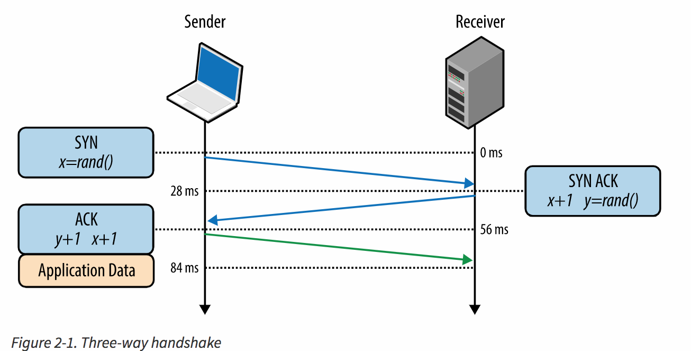

What is TCP/IP
TCP/IP is a Transmission Control Protocol /Internet Protocol which internet used to transfer data. TCP/IP allows a computer to talk to another computer using internet by compiling packets of data and send them to right location. TCP divides a stream of data into chunks, and then adds a TCP header to each chunk to create a TCP segment. A TCP segment consists of a header and a data section. The TCP header contains 10 mandatory fields, and an optional extension field.
There are two layers in this Protocol. 1. TCP and 2. IP
TCP
The top layer, TCP, is responsible for taking large amounts of data, compiling it into packets and sending them on their way to be received by a fellow TCP layer
IP
The bottom layer, IP, is the locational aspect of the pair allowing the packets of information to be sent and received to the correct location.
How TCP Conection Establish
All TCP connections establish with three-way handshake. In this handshake both sender and reciver must agree on starting packet and it look like this:
1. SYN
Client picks a random sequence number x and sends a packet with SYN flag set and the Sequence Number field set to x.
2. SYN-ACK
Reciver increment x by one and picks a random Sequence Number y. Then reciver sends a packet with SYN and ACK flags with sequence number set to y and Acknoledgement Number set to x.
3. ACK
Client increment x and y by adding one and then sends a packet with ACK flag set the Sequence Number field to x and the Acknowlegment Number field set to y.
